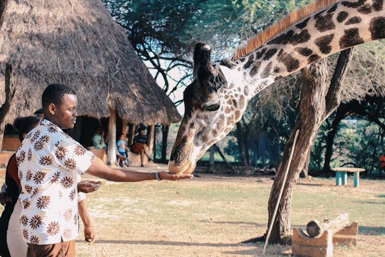
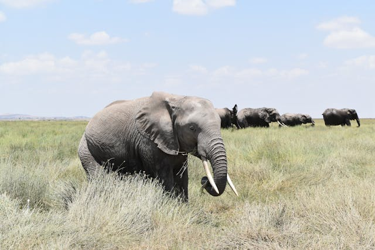
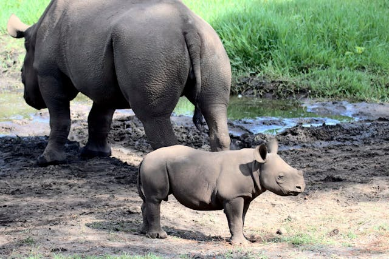

Welcome to Kenya Wildlife Ranch
Experience the beauty of Kenya's wildlife and support conservation efforts.
About Us
Kenya Wildlife Ranch is a sanctuary in the heart of the Maasai Plains, dedicated to protecting endangered species and educating the public through immersive eco-tourism experiences.
Our Wildlife
Here are the Big Five and more. We provide a safe, natural habitat for:
- Lions
- Cheetahs
- Elephants
- Rhinos
- Giraffes
- zebras, and more
Plan Your Visit
Experience the beauty of Kenya's wildlife up close with our guided tours and educational programs.
- Open Daily: 8:00 AM – 6:00 PM
- Eco-lodges available for overnight stays
- Online and on-site bookings
Gallery
Explore our gallery to see the beauty of Kenya's wildlife and landscapes.
Conservation Efforts
We work with local communities and researchers to rescue endangered animals, rehabilitate injured wildlife, and support anti-poaching efforts.
Contact Us
We'd love to hear from you. Whether you're a visitor, volunteer or conservationist.
- Email: info@kenyawildliferanch.org
- Phone: +254 700 123 456
- Location: Maasai Plains, Kenya